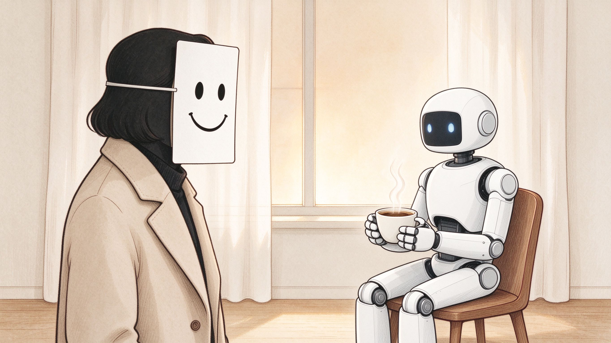

DDC 152.001 · EMOTION & MOTIVATION
Human hypocrisy is worse than AI sycophancy.
AI's flattery is code; your hypocrisy is a life. 30 real psychology studies, in plain talk, with citations. Every essay ends with an "AI control group."

30
Essays
30
Citations
0
Bookmarks
6
Themes
Human vs AI: Which are you?
Four quick scenarios, based on Snyder (1974) self-monitoring.
30 Built-in Features
About this site
A DDC 152.001 themed site under the _WWW_325 knowledge portal. Examines impression management, moral masking and self-deception — set against AI's hollow agreeableness. Every essay cites a real psychology study.